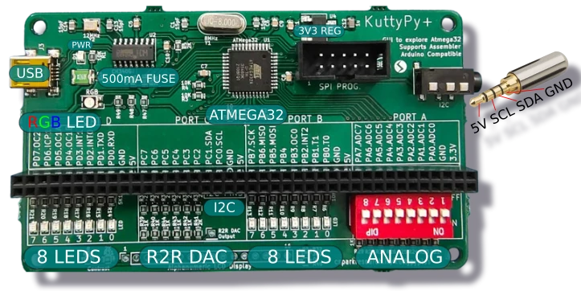
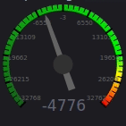

Live register monitor for the KuttyPy ATMEGA32 board. Connect via CH340 or MCP2200 USB serial. Green = logic high, red = logic low.

Sensors
Register Playground
⚠
Usage: Click Connect USB and select your KuttyPy device (CH340 / MCP2200).
Toggle each pin: IN / OUT on ports B–D;
Port A also offers ADC (10-bit analog read on PA0–PA7).
Writing DDRx in the register playground updates the switches below.
Input pins are polled continuously; output pins toggle when you click the LED.
Requires Chrome or Edge (desktop) or Chrome on Android with a USB OTG adapter.